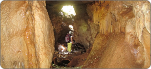
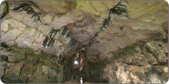

MAHAJANGA
MAHAJANGA
Mahajanga est une ville portuaire située sur la côté nord de Madagascar. Sur le front
de mer, le boulevard de la Corniche, agrémenté de palmiers et d'étals de vendeurs de
rue, mène à une immense baobab. La ville est bordée de plage, dont celle du Grand
Pavois, comprenant plusieurs restaurants à proximités. Non loin de là, le canyon du
cirque du Cirque rouge est doté de remarquables falaises carmin. Face à la baie de
Bombetoka, le phare du village de Katsepy offre une vue panoramique

La Grotte de BELOBAKA
L'ensemble de 07 grottes indépendantes est un lieu d'offrandes qui permet d'appréhender
maints aspects culturels et traditionnels Sakalava. Issues d'une formation Karstique de l'ère
secondaire (65 millions d'années), ces petites grottes renferment des subfossiles de lémuriens
et d'hippopotames, des stalactites et stalagmites et permettent une courte visite pour découvrir
les principaux aspets de ces formations géologiques. Des villages voisins fabriquent des briques
et de la chaux : scènes authentiques, attrayantes et enrichissantes
En plus, à proximité se trouve également une carractère qui semble tout droit sortie des livres d'histoires. L'extraction des pierres
se fait manuellement par les hommes à l'aide de masse, des coins et de barre à mine. Tandis que les femmes concassent les plus petites
blocs. Des installations présentes notamment BETON OUEST et SRAMCO.

profil_des_stalagmites

La_Grotte

profil_de_l'intérieur
